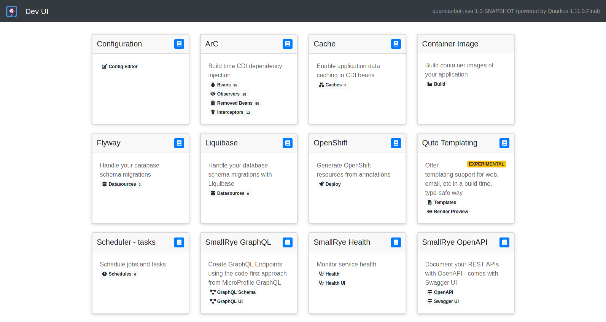
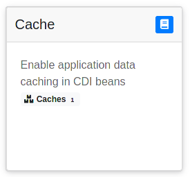
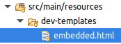
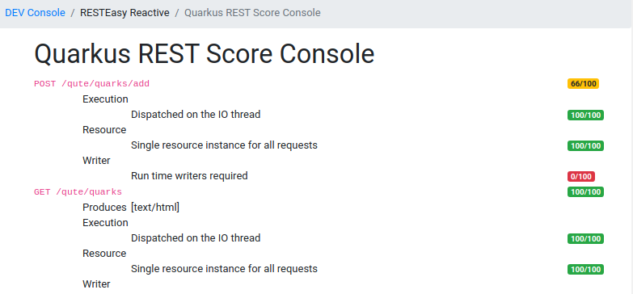
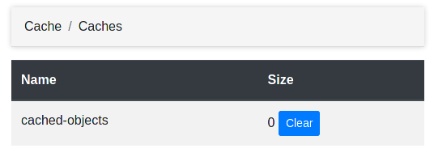
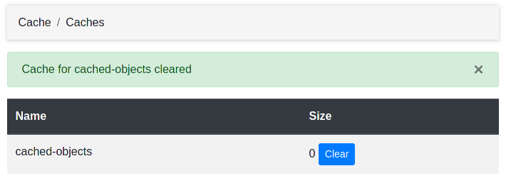

Quarkus - Dev UI
このガイドでは、 エクステンションの作者 のためのQuarkus Dev UIについて説明します。
Quarkusは現在、新しく実験的なDev UIを搭載しています。このUIは、 devモード( mvn quarkus:dev
でquarkusを起動)で利用可能で、/q/dev
に存在し、以下のようなものが表示されます。

これにより、現在ロードされているすべてのエクステンションを素早く可視化し、そのステータスを確認し、ドキュメントに直接アクセスすることができます。
その上で、各エクステンションは以下を追加することができます。
エクステンションをDev UIに対応させるにはどうすればいいですか?
エクステンションをDev UIに表示させるためには、何もする必要はありません!
だから、いつでもそれから始めることができます :)
If you want to contribute badges or links in your extension card on the Dev UI overview page, like this:

deployment
エクステンションのリソースに dev-templates/embedded.html というファイルを追加する必要があります。

このファイルの内容が、エクステンションカードに含まれますので、例えば、次のようにいくつかのスタイリングとアイコンと共に2つのリンクを配置することができます:
<a href="/q/openapi" class="badge badge-light">
<i class="fa ..."></i>
OpenAPI</a>
<a href="/q/swagger-ui/" class="badge badge-light">
<i class="fa ..."></i>
Swagger UI</a>| Font Awesome Freeアイコンセットを使用しています。 |
テンプレートとスタイリングのサポート
embedded.html ファイルと /dev-templates に追加したフルページの両方共、 Qute
テンプレートエンジン によって処理されます。
これはテンプレートを使用できるようにする為に、 /dev-templates/tags に
カスタム Qute タグを追加 出来ることも意味します。
現在使用されているスタイルシステムは Bootstrap V4(4.5.3) ですが、将来的に変更される可能性があるので注意してください。
メインテンプレートには jQuery 3.5.1 も含まれていますが、こちらも変わるかもしれません。
フルページの追加
以下のようなDev UIエクステンションにフルページを追加するには

それらをquarkus-cache エクステンションのこのページのように、
エクステンションの
deployment
モジュールの /dev-templates リソースフォルダーに配置する必要があります。
{#include main}(1)
{#style}(2)
.custom {
color: gray;
}
{/style}
{#title}Cache{/title}(3)
{#body}(4)
<table class="table table-striped custom">
<thead class="thead-dark">
<tr>
<th scope="col">Name</th>
<th scope="col">Size</th>
</tr>
</thead>
<tbody>
{#for cacheInfo in info:cacheInfos}(5)
<tr>
<td>
{cacheInfo.name}
</td>
<td>
<form method="post"(6)
enctype="application/x-www-form-urlencoded">
<label class="form-check-label" for="clear">
{cacheInfo.size}
</label>
<input type="hidden" name="name" value="{cacheInfo.name}">
<input id="clear" type="submit"
class="btn btn-primary btn-sm" value="Clear" >
</form>
</td>
</tr>
{/for}
</tbody>
</table>
{/body}
{/include}| 1 | 他の Dev UI ページと同じスタイルを利用するには、 main テンプレートを拡張します。 |
| 2 | style テンプレートパラメーターで、ページに追加の CSS を渡すことができます。 |
| 3 | title テンプレートパラメーターにページタイトルを設定することを忘れないでください。 |
| 4 | body テンプレートパラメーターには、コンテンツが含まれます。 |
| 5 | テンプレートがQuarkusエクステンションからカスタム情報を読み取るためには、 info
名前空間 を使用することができます。 |
| 6 | これは、 インタラクティブページ を示しています。 |
フルページテンプレートへのリンク
すべてのフルページテンプレートは /q/dev/{groupId}.{artifactId}/ URI (例:
/q/dev/io.quarkus.quarkus-cache/ ) の下に存在するので、 embedded.html
ファイルからそれらにリンクしたい場合は urlbase テンプレートパラメーターを使用してそれらを指すようにすることができます。
<a href="{urlbase}/caches" class="badge badge-light">(1)
<i class="fa ..."></i>
Caches <span class="badge badge-light">{info:cacheInfos.size()}</span></a>| 1 | urlbase テンプレートパラメーターを使用して、フルページテンプレートが配置されている場所を指定します。 |
テンプレートに情報を渡す
embedded.html やフルページのテンプレートでは、エクステンションから得られる情報を表示したい場合が多いでしょう。
その情報を利用可能にするには、ビルドタイムに利用可能か、ランタイムに利用可能かによって、2つの方法があります。
どちらの場合も、 {pkg}.deployment.devconsole パッケージの DevConsoleProcessor クラス
(エクステンションの
deployment
モジュール)でDev UIのサポートを追加することをお勧めします。
ランタイム情報を渡す
package io.quarkus.cache.deployment.devconsole;
import io.quarkus.cache.runtime.CaffeineCacheSupplier;
import io.quarkus.deployment.IsDevelopment;
import io.quarkus.deployment.annotations.BuildStep;
import io.quarkus.devconsole.spi.DevConsoleRuntimeTemplateInfoBuildItem;
public class DevConsoleProcessor {
@BuildStep(onlyIf = IsDevelopment.class)(1)
public DevConsoleRuntimeTemplateInfoBuildItem collectBeanInfo() {
return new DevConsoleRuntimeTemplateInfoBuildItem("cacheInfos",
new CaffeineCacheSupplier());(2)
}
}| 1 | この ビルドステップは 、開発者モードであることを条件にすることを忘れないでください。 |
| 2 | ランタイム dev info:cacheInfos テンプレート値を宣言します。 |
これにより、 info:cacheInfos の値がエクステンションの
runtime
module にマップされます:
package io.quarkus.cache.runtime;
import java.util.ArrayList;
import java.util.Collection;
import java.util.Comparator;
import java.util.List;
import java.util.function.Supplier;
import io.quarkus.arc.Arc;
import io.quarkus.cache.runtime.caffeine.CaffeineCache;
public class CaffeineCacheSupplier implements Supplier<Collection<CaffeineCache>> {
@Override
public List<CaffeineCache> get() {
List<CaffeineCache> allCaches = new ArrayList<>(allCaches());
allCaches.sort(Comparator.comparing(CaffeineCache::getName));
return allCaches;
}
public static Collection<CaffeineCache> allCaches() {
// Get it from ArC at run-time
return (Collection<CaffeineCache>) (Collection)
Arc.container().instance(CacheManagerImpl.class).get().getAllCaches();
}
}ビルドタイム情報を渡す
ビルドタイムの情報だけをテンプレートに渡す必要がある場合もあります。その場合、このようにすることができます:
package io.quarkus.qute.deployment.devconsole;
import java.util.List;
import io.quarkus.deployment.IsDevelopment;
import io.quarkus.deployment.annotations.BuildStep;
import io.quarkus.devconsole.spi.DevConsoleTemplateInfoBuildItem;
import io.quarkus.qute.deployment.CheckedTemplateBuildItem;
import io.quarkus.qute.deployment.TemplateVariantsBuildItem;
public class DevConsoleProcessor {
@BuildStep(onlyIf = IsDevelopment.class)
public DevConsoleTemplateInfoBuildItem collectBeanInfo(
List<CheckedTemplateBuildItem> checkedTemplates,(1)
TemplateVariantsBuildItem variants) {
DevQuteInfos quteInfos = new DevQuteInfos();
for (CheckedTemplateBuildItem checkedTemplate : checkedTemplates) {
DevQuteTemplateInfo templateInfo =
new DevQuteTemplateInfo(checkedTemplate.templateId,
variants.getVariants().get(checkedTemplate.templateId),
checkedTemplate.bindings);
quteInfos.addQuteTemplateInfo(templateInfo);
}
return new DevConsoleTemplateInfoBuildItem("devQuteInfos", quteInfos);(2)
}
}| 1 | 必要な依存関係を入力として使用します。 |
| 2 | ビルドタイム info:devQuteInfos DEVテンプレート値を宣言します。 |
高度な使用法:アクションの追加
Dev UI テンプレートにアクションを追加することもできます。

これは、別の
ビルドステップ
を追加してエクステンションの
deployment
モジュールでアクションを宣言することで実現可能です。
package io.quarkus.cache.deployment.devconsole;
import static io.quarkus.deployment.annotations.ExecutionTime.STATIC_INIT;
import io.quarkus.cache.runtime.devconsole.CacheDevConsoleRecorder;
import io.quarkus.deployment.annotations.BuildStep;
import io.quarkus.deployment.annotations.Record;
import io.quarkus.devconsole.spi.DevConsoleRouteBuildItem;
public class DevConsoleProcessor {
@BuildStep
@Record(value = STATIC_INIT, optional = true)(1)
DevConsoleRouteBuildItem invokeEndpoint(CacheDevConsoleRecorder recorder) {
return new DevConsoleRouteBuildItem("caches", "POST",
recorder.clearCacheHandler());(2)
}
}| 1 | レコーダーをオプションとしてマークし、開発モードの時にのみ起動されるようにします。 |
| 2 | 与えられたハンドラーによって処理される POST {urlbase}/caches ルートを宣言します。 |
| アクションを呼び出す方法は、ページ全体から見る ことができます。 |
あとは、エクステンションの
runtime
module でrecorderを実装するだけです:
package io.quarkus.cache.runtime.devconsole;
import io.quarkus.cache.runtime.CaffeineCacheSupplier;
import io.quarkus.cache.runtime.caffeine.CaffeineCache;
import io.quarkus.runtime.annotations.Recorder;
import io.quarkus.devconsole.runtime.spi.DevConsolePostHandler;
import io.quarkus.vertx.http.runtime.devmode.devconsole.FlashScopeUtil.FlashMessageStatus;
import io.vertx.core.Handler;
import io.vertx.core.MultiMap;
import io.vertx.ext.web.RoutingContext;
@Recorder
public class CacheDevConsoleRecorder {
public Handler<RoutingContext> clearCacheHandler() {
return new DevConsolePostHandler() {(1)
@Override
protected void handlePost(RoutingContext event, MultiMap form) (2)
throws Exception {
String cacheName = form.get("name");
for (CaffeineCache cache : CaffeineCacheSupplier.allCaches()) {
if (cache.getName().equals(cacheName)) {
cache.invalidateAll();
flashMessage(event, "Cache for " + cacheName + " cleared");(3)
return;
}
}
flashMessage(event, "Cache for " + cacheName + " not found",
FlashMessageStatus.ERROR);(4)
}
};
}
}| 1 | どのVert.x
ハンドラーでも 使用することができますが、 DevConsolePostHandler スーパークラスは POST
アクションをうまく処理し、最適な動作を実現するために POST の直後に GET URI に自動リダイレクトします。 |
| 2 | Vert.x RoutingContext の他、 form のコンテンツも入手できます。 |
| 3 | すべてがうまくいったことを知らせるために、ユーザーにメッセージを追加することを忘れないでください。 |
| 4 | エラーメッセージを追加することもできます。 |
フラッシュメッセージは main DEV テンプレートで処理され、ユーザーへの素敵な通知になります。
|
